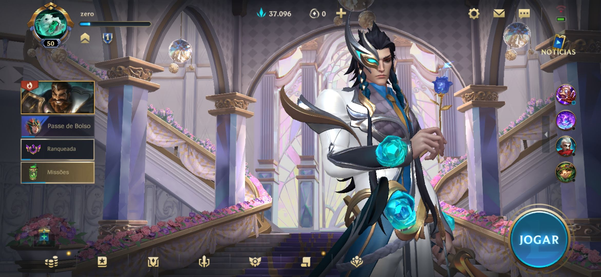
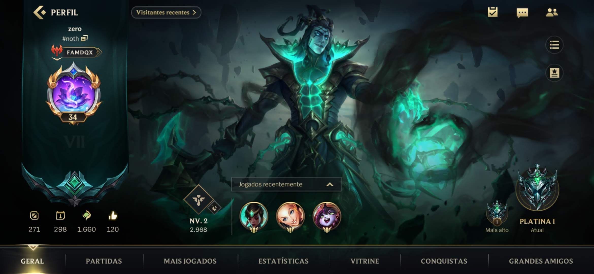
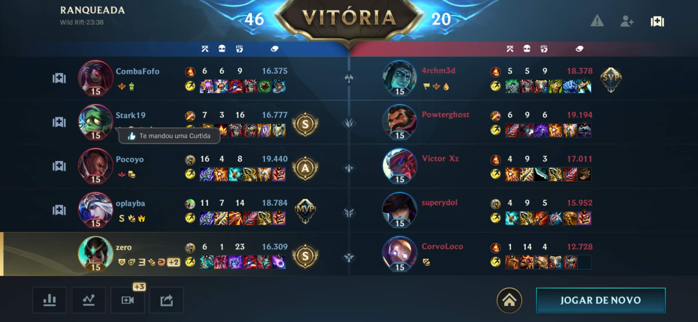
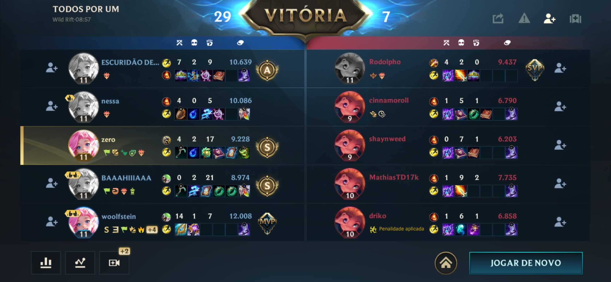

Resumo
League of Legends, MOBA desenvolvido pela Riot Games esteve, até então, apenas disponibilizado para PCs e Mac mas, em 2020, o caso mudou de figura com o lançamento de League of Legends: Wild Rift em dispositivos móveis, sendo que o mesmo está agendado para as consolas se bem que uma data ainda não foi revelada.

Perfil
ScreenShots do jogo
 O mapa
Cada equipe surge na fonte de sua respectiva base, uma área segura que ataca violentamente os inimigos e cura rapidamente os aliados. À frente de cada fonte localiza-se o Nexus, uma poderosa construção que você deve destruir (ou proteger, caso seja a sua!) para vencer. Em cada uma das rotas, há três torres dispostas em intervalos regulares separando sua equipe do Nexus inimigo.

Elas disparam contra qualquer inimigo que ousar se aproximar, então deixe que suas tropas sofram dano em vez de você! A selva é um verdadeiro zoológico de monstros neutros, mas, logo de início, o mais importante é saber sobre os dragões, o Arauto do Vale e o Barão. Eles são os chefões do lugar que você realmente precisa focar em garantir pra sua equipe (quando estiver forte o suficiente, é claro!)
Gameplay
PVP
O clássico LoLzinho! Duas equipes de cinco integrantes escolhem os Campeões que preferirem (desde que nenhum aliado escolha primeiro!) e partem para a briga no Rift! Essas partidas são ideais para quem prefere jogos rápidos e sem comprometimento.
RANQUEADA
As diferenças entre as partidas normais e ranqueadas começam na Seleção de Campeões. Aqui, o pessoal escolhe os Campeões seguindo um formato revezado, no qual as equipes se alternam na seleção. Além disso, as partidas ranqueadas são mais longas e competitivas, com um sistema de pontuação que determina a habilidade dos jogadores.
TODOS POR UM
Neste modo, todos os jogadores da equipe jogam com o mesmo Campeão! A ideia é que vocês se unam e aprendam a jogar com um Campeão específico, além de se divertirem com as habilidades e estratégias do personagem.
QUASE PENTA